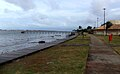

Localização
Aracaju fica na América do Sul, no Brasil. É a capital do estado de Sergipe, na região Nordeste, junto ao litoral do oceano Atlântico e ao rio Sergipe.

Aracaju fica na América do Sul, no Brasil. É a capital do estado de Sergipe, na região Nordeste, junto ao litoral do oceano Atlântico e ao rio Sergipe.
